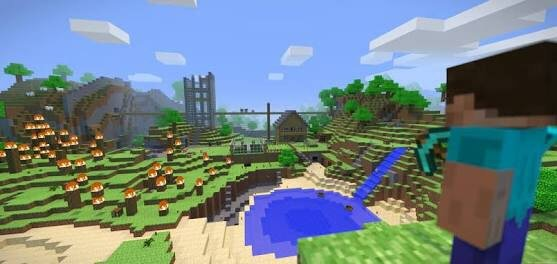
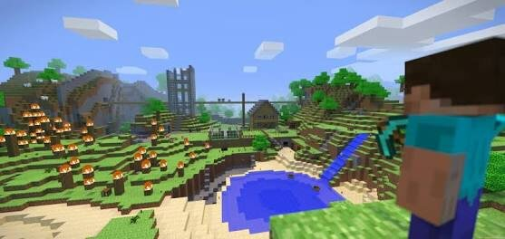

Accede a todas las funcionas de Minecraft Java.
Accediendo a tu perfil de Mojang podras customizar tu perfil libremente.
Comienza tu aventura!

¡Mojang es una empresa fundada por Notch en el 2009, y es la encargada de
desarrollar Minecraft en todas sus versiones!
El sitio oficial de Mojang ha quedado reducido únicamente a la página oficial de Minecraft.
Si todavía no migraste la cuenta, recorda hacerlo.
 
